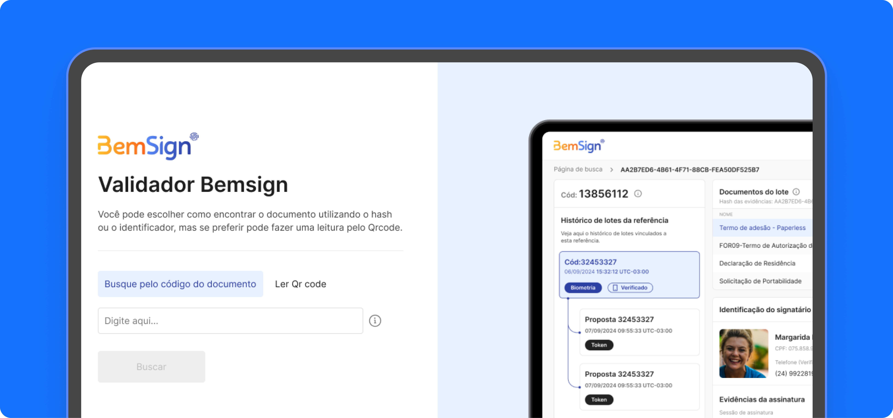
BemSign -
Portal Validador
Em agosto de 2024, recebi a demanda de atualizar o Portal Validador da nossa plataforma de assinatura eletrônica, o BemSign. À primeira vista, parecia uma tarefa relativamente simples, porém o projeto rapidamente se mostrou um dos mais desafiadores e interessantes em que já atuei.
O Portal Validador é uma ferramenta estratégica utilizada por peritos jurídicos para validar informações essenciais como data, hora, dispositivo, versão, e outros dados.
Apesar de sua importância estratégica, o Portal apresentava pontos que dificultavam a rotina dos peritos:
- Interface pouco clara: as informações críticas, como código do documento, versão, dispositivo e evidências da assinatura, estavam espalhadas e exigiam esforço extra para serem localizadas.
- Tempo de análise elevado: em média, a validação de um documento podia levar 10–12 minutos, quando o esperado era que o processo fosse rápido e o mais fácil possível para o perito.
- Ausência de feedback visual: erros na busca ou falhas de carregamento não comunicavam claramente ao usuário o que havia acontecido.
- Barreiras de acessibilidade: elementos de contraste e legibilidade não estavam otimizados para profissionais que passavam horas analisando dados em tela.
Esses problemas impactavam não só a eficiência dos peritos jurídicos, que precisavam emitir laudos de forma ágil e segura, mas também a credibilidade do BemSign no mercado, já que a experiência do portal transmitia diretamente a confiança na plataforma de assinaturas.
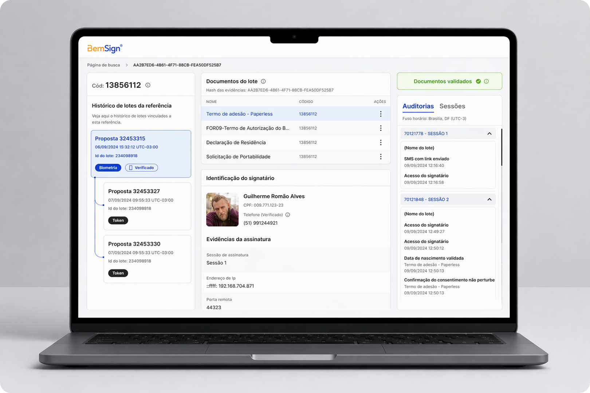
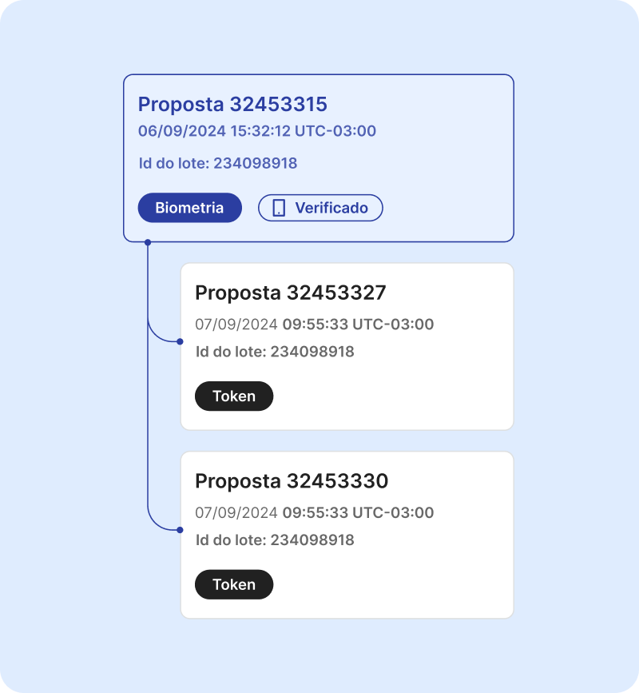
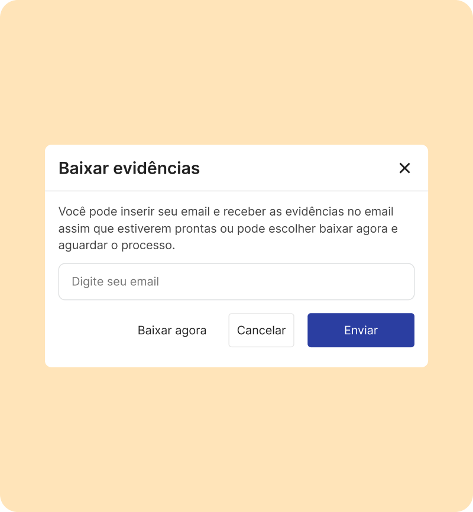
Para entender melhor o produto que já existia e como ele funcionava eu estruturei uma pesquisa com o dono do produto e com alguns peritos. Com o PO eu fiz algumas reuniões onde fui extraindo informações e documentando, e com os peritos eu resolvi fazer um processo diferente, estruturei para fazer sessões de shadowing com os peritos.
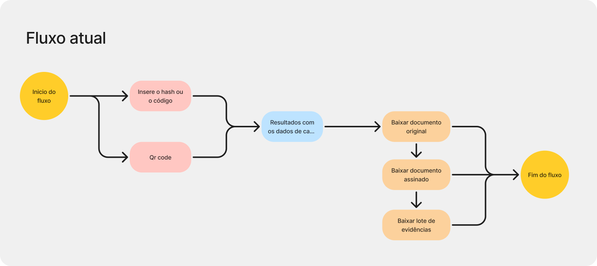
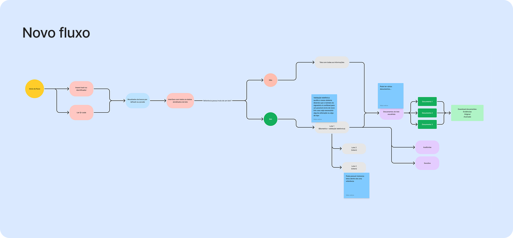
O shadowing com os peritos me ajudou a entender os principais problemas que eles passavam com a versão do portal antigo. Com isso elaboramos a hipótese de desenhar uma estrutura mais robusta, mas ao mesmo tempo muito fácil de encontrar as informações principais para análise dos documentos. A partir disso, a hipótese foi criar um one-page view para concentrar as informações principais do documento.
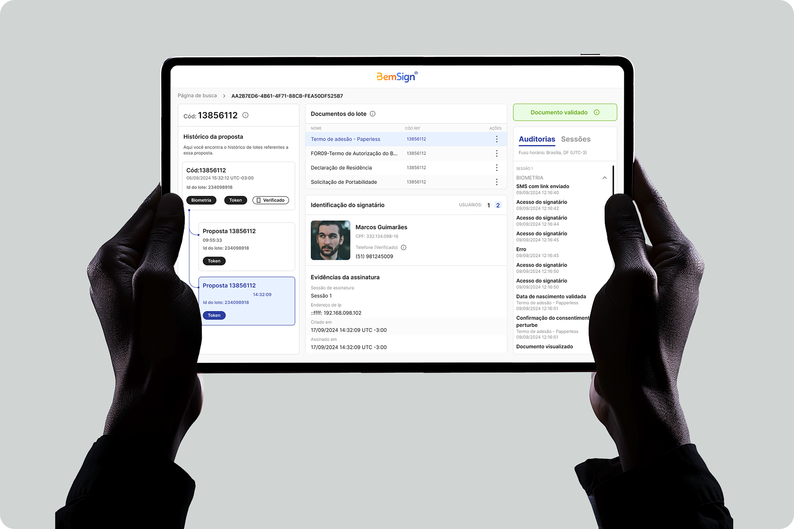
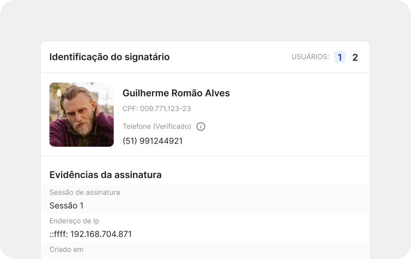
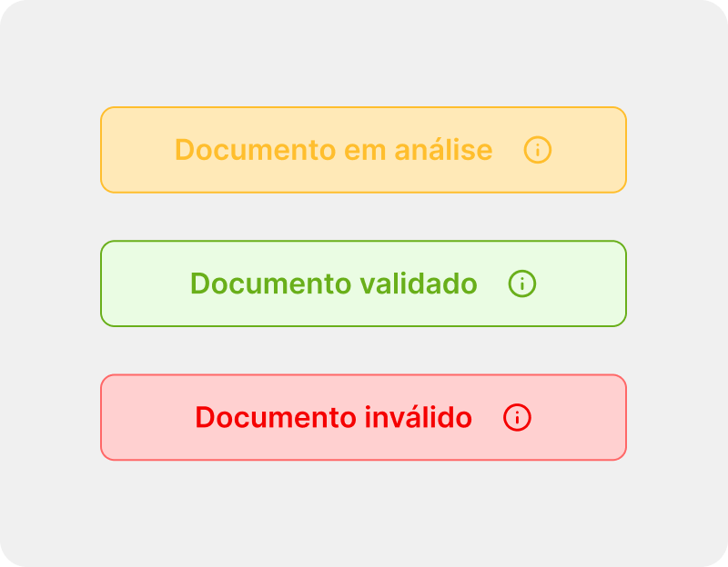
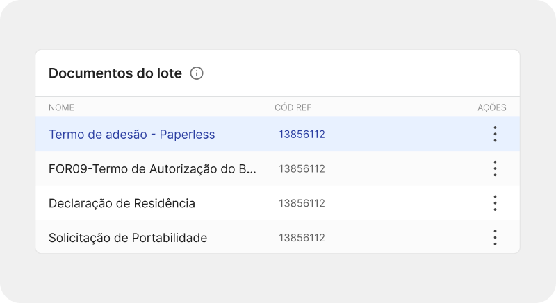
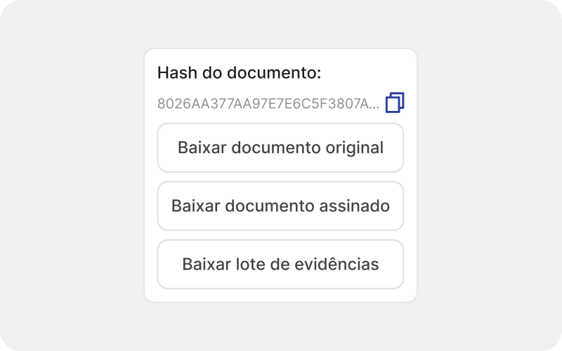
Fizemos algumas rodadas de testes com os peritos e buscamos entender pontos que ainda geravam fricção entre análise e analista. Houve insights interessantes onde precisamos reajustar algumas informações e trazer novas. O principal ponto que notamos foi, os peritos estavam sentindo falta de uma versão mobile, pois muitas vezes precisavam passar informações em momentos em que estavam em locais informais como: transito, restaurante entre outros.
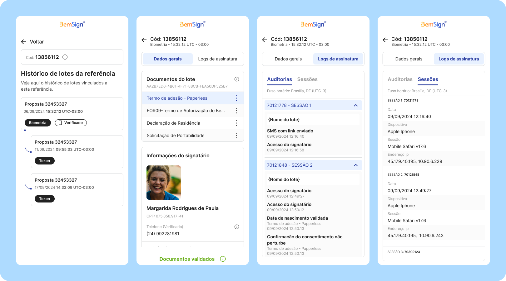
Com tudo que foi criado e testado conseguimos resultados satisfatórios, antes o usuário tinha necessidade de subir o arquivo para o sistema, na nossa nova versão é muito mais fácil e rápido ele consegue encontrar pelo hash ou pelo qrcode. Olhando para essas facilidades que implementamos os nosso peritos conseguiram diminuir o tempo que gastavam para analisar um único documento. Conseguimos entregar informações complexas que antes o perito precisa olhar nos metadados de documentos, além de abrir mais de 1 arquivo para poder validar um único documento. Como essa solução é utilizada de forma pontual, decidimos que nossos resultados seriam medidos de forma qualitativa, ao longo dos meses recebemos inúmeros relatos positivos sobre a plataforma.